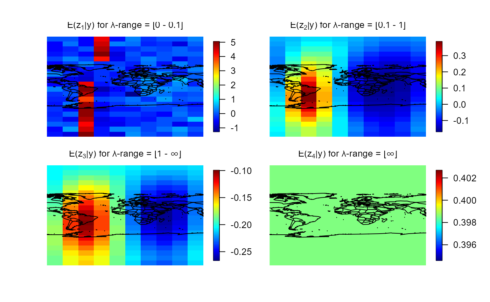
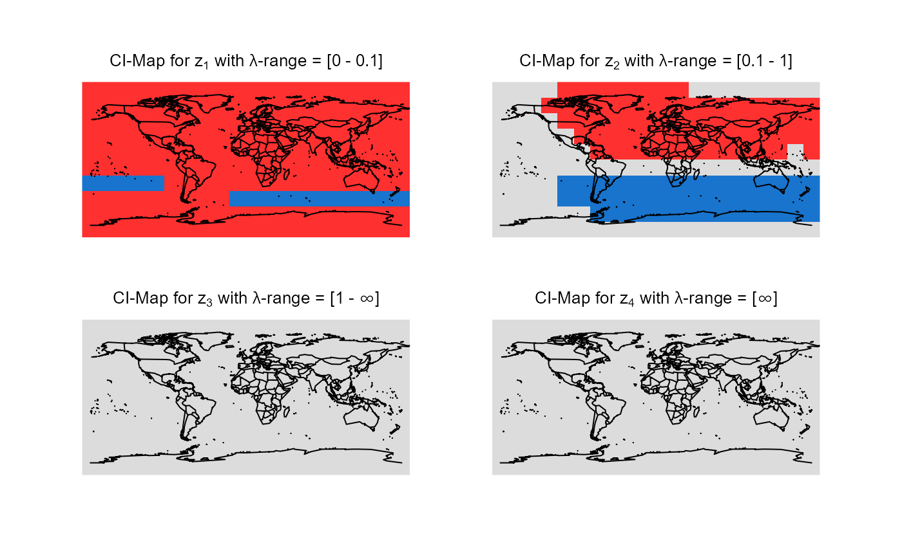

Plotting of simultaneous credible intervals on a sphere.
Source:R/plot.CImapSphere.R
plot.CImapSphere.RdMaps with simultaneous credible intervals for all differences of smooths at neighboring scales \(z_{i}\) are plotted. Continental lines are added.
Arguments
- x
List containing the simultaneous credible intervals of all differences of smooths.
- lon
Vector containing the longitudes of the data points.
- lat
Vector containing the latitudes of the data points.
- color
Vector of length 3 containing the colors to be used in the credibility maps. The first color represents the credibly negative pixels, the second color the pixels that are not credibly different from zero and the third color the credibly positive pixels.
- turnOut
Logical. Should the output images be turned 90 degrees counter-clockwise?
- title
Vector containing one string per plot. The required number of titles is equal to
length(mrbOut$ciout). If notitleis passed, defaults are used.- ...
Further graphical parameters can be passed.
Details
The default colors of the maps have the following meaning:
Blue: Credibly positive pixels.
Red: Credibly negative pixels.
Grey: Pixels that are not credibly different from zero.
x corresponds to the ciout-part of the
output of mrbsizeRsphere.
Examples
# Artificial spherical sample data
set.seed(987)
sampleData <- matrix(stats::rnorm(2000), nrow = 200)
sampleData[50:65, ] <- sampleData[50:65, ] + 5
lon <- seq(-180, 180, length.out = 20)
lat <- seq(-90, 90, length.out = 10)
# mrbsizeRsphere analysis
mrbOut <- mrbsizeRsphere(posteriorFile = sampleData, mm = 20, nn = 10,
lambdaSmoother = c(0.1, 1), prob = 0.95)
# Posterior mean of the differences of smooths
plot(x = mrbOut$smMean, lon = lon, lat = lat,
color = fields::tim.colors())

# Credibility analysis using simultaneous credible intervals
plot(x = mrbOut$ciout, lon = lon, lat = lat)
